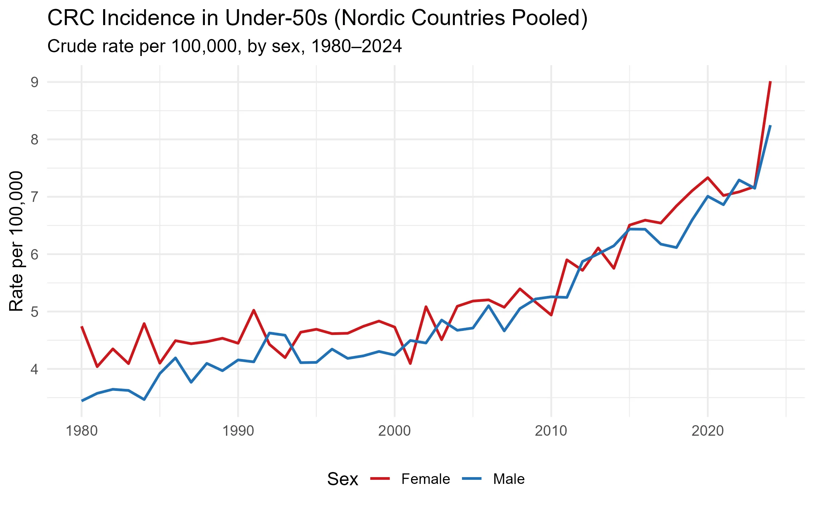
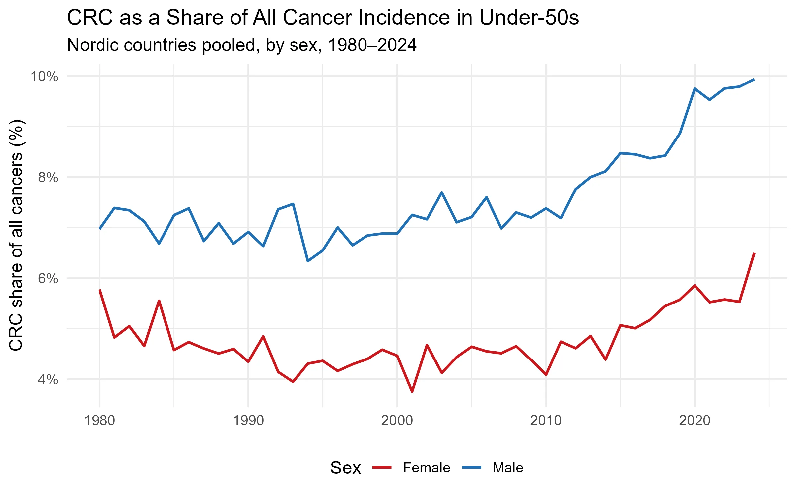
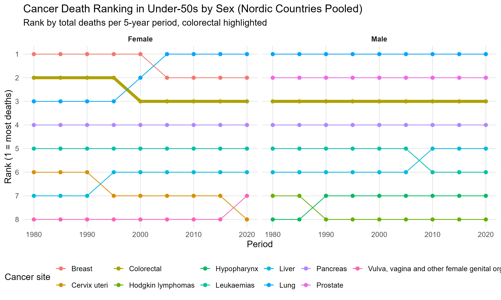

In March 2026, The Guardian reported that colorectal cancer (CRC) had overtaken all other cancers as the leading cause of cancer death among Americans under 50. That is a striking headline, and it raises a natural question for those of us working with Nordic registry data: is the same pattern playing out here?
Fortunately, this is a question we can actually answer. NORDCAN, maintained by the International Agency for Research on Cancer (IARC) in collaboration with the national cancer registries of Denmark, Finland, Iceland, Norway, and Sweden, has been making high-quality, harmonised cancer data freely available to the public for decades. It is one of the most valuable open resources in cancer epidemiology, and work like this would not be possible without it. Pulling roughly 40 years of registry data and pooling across all five Nordic countries from 1980 to 2024, I find that the answer is nuanced. The trend is there, but the ranking as per the Guardian headline does not translate directly.

CRC incidence in under-50s has risen steeply in both men and women. In males, rates climbed from 3.4 to 8.2 per 100,000, a 140% increase. In females, rates went from 4.7 to 9.0 per 100,000, a 90% increase. Women have had higher absolute rates throughout the period, but the male trajectory is steeper and accelerating faster, especially in the last decade. This rise predates organised screening programmes; most Nordic countries did not introduce population-based CRC screening until the 2010s, and those programmes target ages 50 and above.
A natural follow-up question would be: is CRC incidence rising in step with cancer incidence overall, or is it growing disproportionately fast?

For young men, CRC is not just becoming more common; it is taking up an increasing share of the cancer burden. A shift from 7% to 10% of all cancer diagnoses means CRC is outpacing cancer incidence in general. For women, the share has moved less, suggesting CRC incidence is rising roughly in line with the overall trend. This sex difference is one of the more notable features of the data: whatever is driving the rise is acting disproportionately on young men.
Alongside rising incidence, outcomes are improving. Five-year relative survival for CRC across the Nordic countries has climbed from approximately 71% in the mid-1980s to 88% today. Better surgical techniques, targeted therapies, and earlier symptomatic detection have all undoubtedly contributed. But improving survival does not fully offset the concern. So is CRC really the leading cancer killer in young Nordic adults, as it now is in the US?

In the Nordic countries, the answer is no. CRC ranks #3 among cancer deaths in under-50s for both sexes and has held that position remarkably consistently since 1980. In men, brain tumours and leukaemia claim the top two spots. In women, breast cancer has historically dominated the first position by a wide margin, though a striking development is visible in the most recent period: lung cancer appears to have overtaken breast cancer as the leading cause of cancer death in young Nordic women. That shift deserves its own analysis and will be the subject of a future post. The Guardian headline reflects a US-specific ranking that does not directly map to the Nordic picture, likely driven by differences in screening uptake, dietary patterns, and the relative burden of other cancers across the two populations.
What the Nordic data does confirm is the direction. CRC incidence in younger adults is rising, has been rising for over four decades, and is accelerating. The share of all cancers attributable to CRC is growing, particularly in young men. These are not features of a stable epidemiological landscape. Whether CRC eventually climbs to #1 in the Nordics is less important than the fact that it is moving in that direction in a population that historically had very low rates, and in which screening programmes offer no protection.